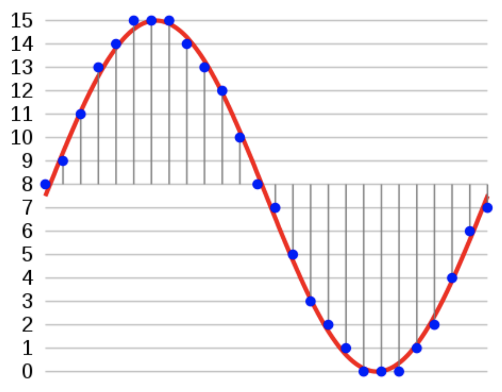
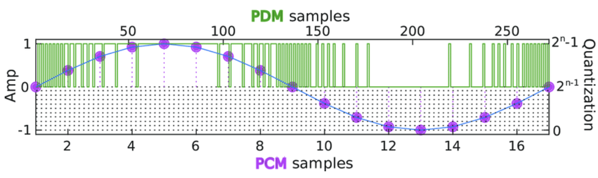

Conversion des données PDM → PCM
Le PCM
Le PCM (Pulse Code With Modulation), est un signal numérique produit à la suite d'une chaîne d'opération: Échantillonnage, quantification et codage.
Comme on peut le constater sur la figure suivante le signal est échantilloné à une fréquence fe et chaque échantillon représente une impulsion à une certaine amplitude.

Si l'on compare l'allure d'un signal PDM à celle d'un signal PCM, on remarque 2 différences principales:
- La fréquence d'échantillonnage du signal PDM est plus importante que celle du signal PCM
- Le signal PDM possède des amplitudes binaires (0-1) alors que l'amplitude du PCM est numériques.

Conversion
Ils existes plusieurs solutions, pour réaliser une conversion PDM vers PCM. Selon la documentation de STM32 il est conséillé de suivre la procédure suivante :

Il faut dans un premier temps utilisé un filtre passe-bas pour convertir les données PDM en PCM, puis utiliser une décimation pour réduire la fréquence d'échantillonnage du signal PCM. Dans le cas du projet, nous allons simplifier les choses, nous allons simplement réaliser une décimation. Une décimation tout de même un peu particulière puisqu'en plus de décimé notre signal on va convertir nos bits en données numériques, c'est à dire en PCM.
Comme expliqué précédement le PDM est configuré à une fréquence d'échantillonage de 3.072 MHz, ce qui est beaucoup plus important que la fréquence cible du PCM qui est de 48kHz. L'objectif est donc de réduire la fréquence du signal PDM.
La décimation permet de réduire la fréquence d'échantillonage d'un signal en prenant seulement un échanitillon tous les n-échantillons:

C'est donc idéal pour notre cas d'utilisation.
Pour déterminer le facteur de décimation on peut appliquer la formule de la figure précédente. Après calcul on trouve un facteur de décimation de 64. Si on prend donc 1 échantillon PDM tout les 64 échantillons on obtiendra un signal avec une fréquence de 48kHz.
Seulement, prendre 1 échantillon tout les n-échantillons, permet uinquement de réduire la fréquence d'échantillonage du signal, pas de convertir en PDM → PCM. On va donc compter tous les bits à 1 dans une trame de 64 bits, ce qui nous permettra d'obtenir une valeur entre 0 et 64.
Au final on obtiendra un signal PCM avec un certain nombres d'impulsions, des amplitudes situé entre 0 et 64 avec une fréquence d'échantillonage de 48kHz
Mise en pratique
Lecture du DMA
Comme expliqué dans la partie de l'acquisition, nous travaillons en demi DMA pour des soucis de stockage et de conversion en temps réel. Quand un demi DMA est plein, les données PDM sont disponible pour être convertis en PCM.
Il faut donc savoir qu'elle partie du DMA est plein pour procédé à la conversion.
STM nous donne accès à deux fonctions d'interruptions que l'on peut modifier pour mettre des flags à 1.
- Une intérruption pour déterminer si la moitié du DMA est plein:
void HAL_SAI_RxHalfCpltCallback(SAI_HandleTypeDef *hsai) - Une intérruption pour déterminer si le DMA est plein:
void HAL_SAI_RxHalfCpltCallback(SAI_HandleTypeDef *hsai)
Grâce à c'est fonction on peut facilement déterminer qu'elle partie du DMA est pleine et doit être convertis en PCM.
Maintenant que l'on sait manipuler les différents secteurs du DMA, on peut facilement réaliser une boucle while, pour convertir des données en temps réel à chaque fois que l'on à une interruption.
while (recording){
if(dmaLSBFull || dmaMSBFull){ // si l'une des moitié du DMA est pleine
if (dmaMSBFull){
dmaMSBFull = 0; // remise à 0 du flag
pdm2pcm((uint8_t*)(pdmBuffer+PDM_BUFFERSIZE/2), pcmBuffer);
}
else {
dmaLSBFull = 0;
pdm2pcm(pdmBuffer, pcmBuffer);
}
// ajout des données pcm convertis aux données finale
for(int i = 0; i<PCM_BUFFERSIZE; i++){
pcmData[pcmDataIndex]=pcmBuffer[i];
pcmDataIndex++;
if(pcmDataIndex >= PCM_NB_SAMPLE){
recording = 0;
HAL_SAI_DMAStop(&hsai_BlockA1);
}
}
}
}
Chaque i
void pdm2pcm(uint8_t* pdmBuffer, uint32_t* pcmBuffer){
uint64_t* pdmFrameBuffer = pdmBuffer;
for (int frameNbr=0; frameNbr<NB_FRAME_IN_PDM_BUFFERSIZE/2; frameNbr++){
pcmBuffer[frameNbr] = (uint32_t)__builtin_popcount(pdmFrameBuffer[frameNbr]);
}
}